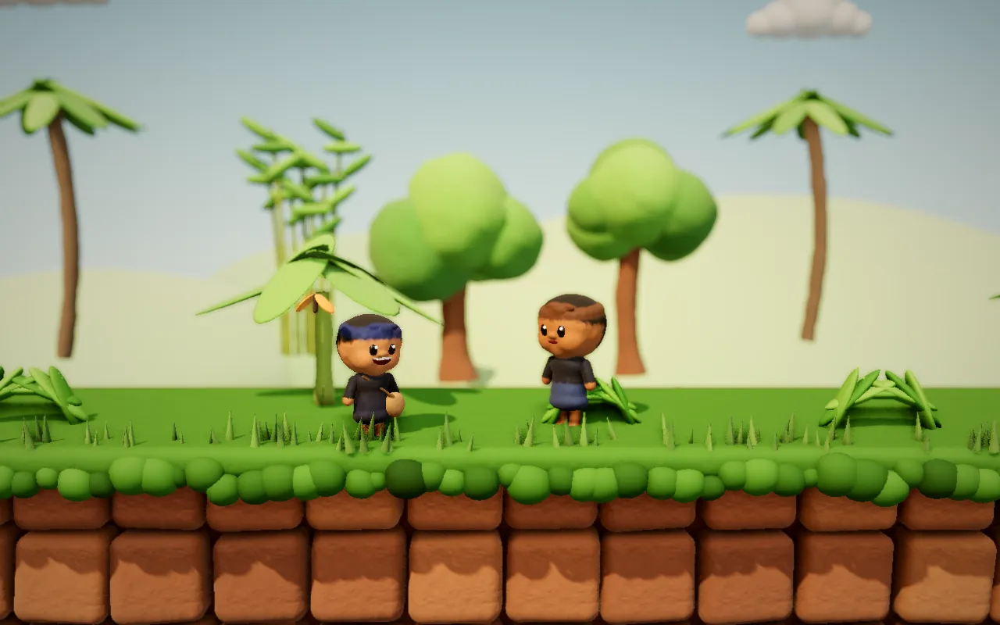
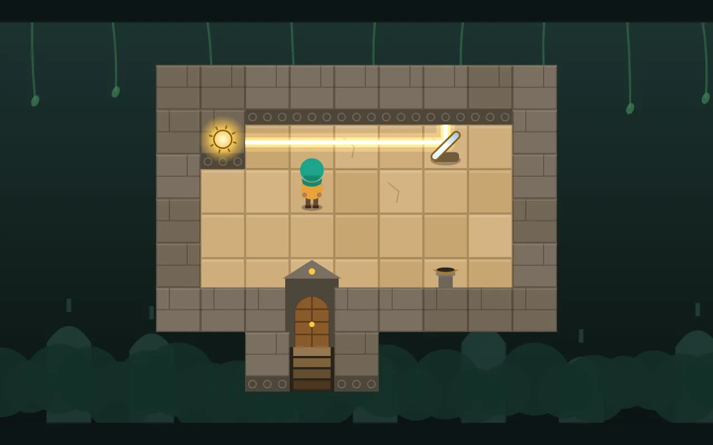

Jalan Awi
Bantu Mael membawa padi ke leuit di kampung Pasir Kawung. Bambu tidak boleh dipotong atau disambung.
- 7+ tahun
- 10–15 menit
- 3D
Token dan komponen beranda. Halaman ini tidak ditautkan dari navigasi.
Young Serif: judul dan nama game
Petualangan & Aksi
Figtree 800: penekanan pendek
Figtree 400: teks isi untuk deskripsi game, lebar baris paling banyak sekitar 65 karakter supaya enak dibaca anak dan orang tua.
Figtree 400 kecil: keterangan tambahan

Bantu Neng menyalakan obor di candi kuno.